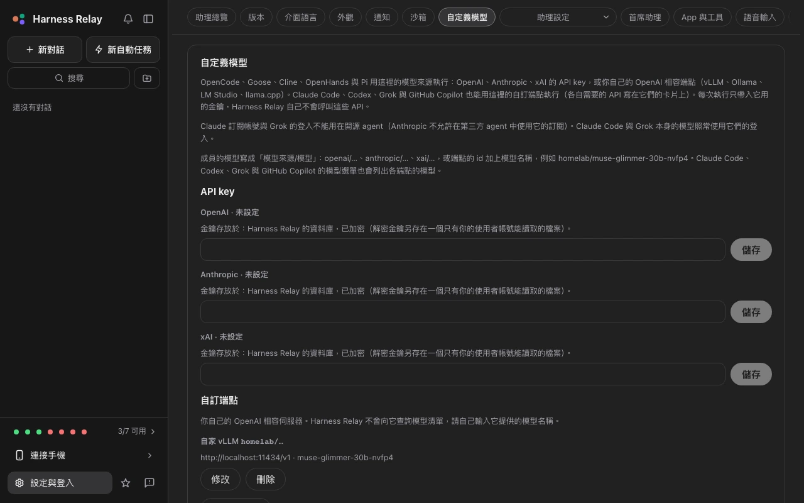
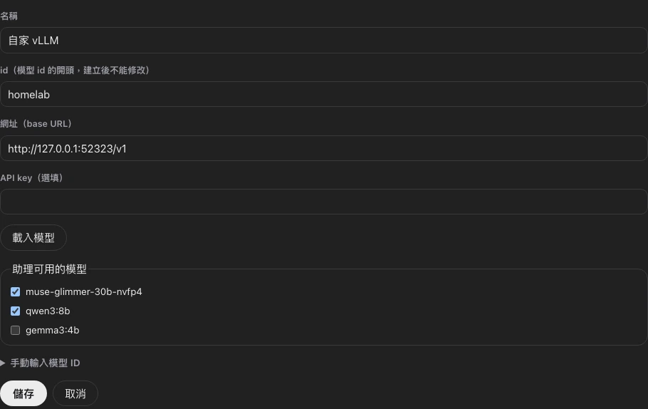
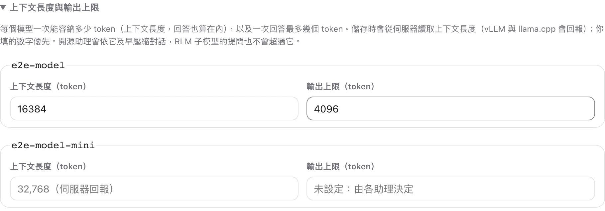
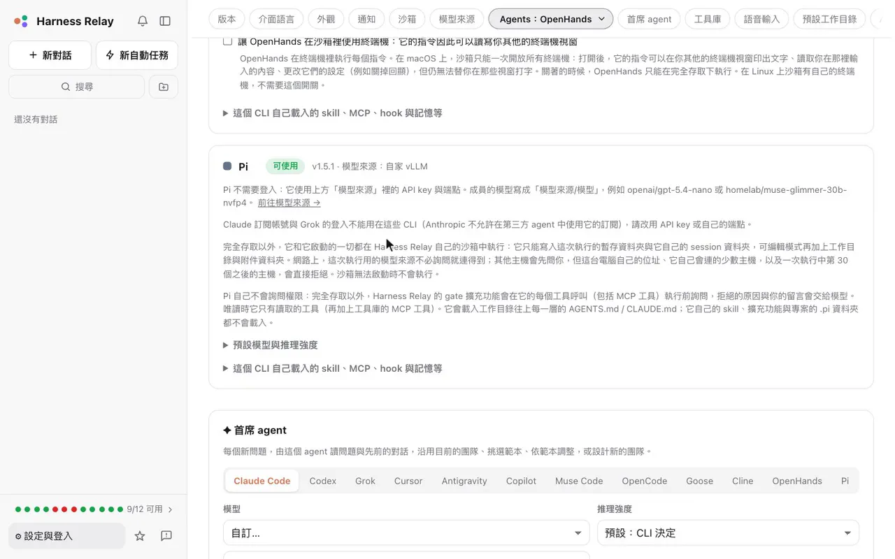
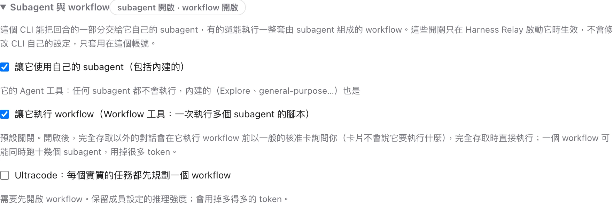

連接你的 agent
Harness Relay 以你的登入身分，使用你原本就在用的 coding agent。在「設定與登入」把每個 agent 登入一次，或給開源 agent 一把 API key 或你自己的模型伺服器，它們就能加入任何團隊。
設定與登入
點側邊欄底部的設定與登入。可用的 AI 助理會列出已可用的助理。展開連接另一個助理，即可看到哪些需要安裝、登入或設定模型來源。點助理名稱可前往對應的設定。模型連線排在各個 agent 之前，接著每個 agent 都有一張卡片。卡片會顯示 agent 的版本；Harness Relay 在你電腦上找不到它時，則顯示安裝它的按鈕。它的每個帳號都有自己的框，裡面是那個帳號的登入、API key 與預設模型。
側邊欄底部的圓點，讓你一眼看出哪些 agent 可以使用：
| 圓點 | 意思 |
|---|---|
| 綠色 | 可以使用。 |
| 橘色 | 還沒登入；開源 agent 則是還沒有模型來源。 |
| 紅色 | 這台電腦上找不到這個 agent 的程式。 |
旁邊會寫出有幾個可以使用（4/12 可用）。把滑鼠移到圓點上可以看到 agent 的名稱，點它則會打開那個 agent 的設定。
登入 agent
在 agent 的卡片上選一種登入方式，按登入。Harness Relay 會執行那個 agent 自己的登入流程，並告訴你要做什麼：
| Agent | 怎麼登入 |
|---|---|
| Claude Code | 用 Claude 訂閱帳號或 Anthropic Console：打開連結並授權，再把頁面顯示的授權碼貼到輸入框，按送出。 |
| Codex | 用 ChatGPT 的裝置碼：打開連結、登入 ChatGPT，輸入畫面上的一次性代碼（點一下即可複製）。也可以在瀏覽器登入，瀏覽器會在這台電腦打開。 |
| Grok | 用 xAI 的裝置碼或在瀏覽器登入：打開連結並確認代碼。 |
| Cursor | 用你的 Cursor 帳號：在任何一台裝置的瀏覽器打開連結，登入 Cursor 並允許。 |
| Antigravity | 用你的 Google 帳號：在任何一台裝置打開連結並登入 Google，再把頁面顯示的授權碼貼到輸入框，按送出。 |
| Copilot | 用你的 GitHub 帳號：在任何一台裝置打開 github.com/login/device，輸入畫面上的代碼（點一下即可複製）並授權。 |
| Muse Code | 用你的 Meta 帳號：在任何一台裝置打開連結，登入你的 Meta 帳號，並確認頁面上的代碼和畫面上的一樣。 |
agent 完成後，面板會變成綠色的登入成功 ✓。出了問題時，展開 CLI 輸出可以看到 agent 說了什麼。設定頁最上方的重新檢查狀態會重新檢查每個 agent，例如你在終端機登入了某個 agent 之後。
這就是 agent 自己的登入，和你在終端機用的是同一個。所以登出會讓這台電腦上的那個 agent 全面登出；新的 Codex 登入也會先登出目前的 Codex 帳號（頁面會先問你）。
或使用 API key
不登入的話，七個 agent 都可以在帳號框的 API key 填一把金鑰。Claude Code、Codex、Grok、Antigravity 與 Muse Code 的金鑰由 agent 的供應商依用量計費，而不是算在訂閱方案裡：
- Claude Code：Anthropic API key。它優先於你的 Claude 訂閱。
- Codex：OpenAI API key。Codex 會保存它，並取代你的 ChatGPT 登入。
- Grok：xAI API key。
- Cursor：Cursor API key，只用在 Harness Relay 的執行；你自己的 Cursor 登入維持原樣。
- Antigravity：Gemini API key。之後 Antigravity 改用 Gemini API 執行，而不是你的 Google 登入。
- Copilot：具有「Copilot Requests」權限的 fine-grained GitHub token（classic token 不能用）。它用的是那個 GitHub 帳號的方案。
- Muse Code：Meta API key。
Harness Relay 把其他金鑰存在系統的金鑰儲存區（macOS 鑰匙圈、Windows 認證管理員，或 Linux 的 keyring），畫面上只會顯示遮蔽過的內容。
模型連線
OpenCode、Goose、Cline、OpenHands 與 Pi 沒有登入流程。它們會使用你在設定 → 模型連線設定的模型來源。
- 展開開源助理的 API Key，即可為上述五個助理設定金鑰。OpenAI、Anthropic、xAI 各一把。貼上後按儲存。這裡不能用你的 Claude 訂閱或 Grok 登入：Anthropic 不允許在其他 agent 中使用它的訂閱。
-
自訂端點即使收合也會列出支援的助理。上述五個開源助理，加上 Claude Code、Codex、Grok 與 GitHub Copilot，都能使用自己的伺服器。展開後即可連接 vLLM、Ollama、LM Studio、llama.cpp 等 OpenAI 相容伺服器。
按新增端點，填寫名稱、簡短的 ID（例如
homelab）、端點網址（本機的 Ollama 是http://localhost:11434/v1）與金鑰（選填）。 按載入模型，勾選要在助理選單中顯示的模型 ID，也可以展開手動輸入模型 ID 來新增 ID。先前已儲存的 ID 會保持勾選。 只改既有端點名稱可在本機儲存。新增端點或變更網址、金鑰、模型時，按儲存會重新讀取清單，驗證勾選或手動輸入的每個 ID。如果清單沒有該 ID，或伺服器不支援列出模型，則會查詢個別模型資料。只有清單與所有指定模型的個別資料都未提供時，Relay 才會詢問是否儲存未驗證的 ID。取消會留在編輯畫面。連線或授權失敗、回傳的 ID 不符，或有提供模型資料卻找不到該 ID，都會阻止儲存並保留表單內容。檢查時不會執行模型。


開源 agent 的成員，模型寫成「模型來源/模型」：openai/…、anthropic/…、xai/…，或你的端點 id 加上模型，例如
homelab/muse-glimmer-30b-nvfp4。agent 裝好、且至少設定一個模型來源後，它在設定頁的卡片會顯示可使用。
其他 agent 也能用你自己的模型
Claude Code、Codex、Grok 與 Copilot 也能在你的自訂端點上執行：它們的模型選單會在自己的模型後面列出端點的模型。給成員選其中一個，那個 agent 就在你的伺服器上工作，而不是用它供應商的服務。你的伺服器要提供那個 agent 用的 API；vLLM、Ollama、LM Studio 與 llama.cpp 都提供。這時 Claude Code、Codex 與 Copilot 不需要登入；Grok 仍需要它自己的登入。Cursor、Antigravity 與 Muse Code 只能用它們自己的服務。
你自己模型的上下文長度
在上下文長度與輸出上限底下，你在端點勾選的每個模型都有一次能容納的 token 數，以及一次回答最多的 token 數。 儲存時會從伺服器讀取上下文長度（vLLM 與 llama.cpp 會回報）；你填的數字優先。開源 agent 會依它在小模型的上下文填滿之前就壓縮對話， 也讓很長的工具輸出不超過它。

帳號與方案用量
多個帳號
每個 agent 都能同時登入好幾個帳號，例如公司和個人的 Claude 訂閱：打開 agent 帳號下方的新增帳號，取個名稱，按新增帳號。每個帳號各自登入，也有自己的 API key 與預設模型。在團隊裡，用成員卡片上的帳號選擇它用哪個帳號；沒有選的成員使用預設帳號。按移除會登出並刪除多出來的帳號。
Cursor、Antigravity 與 Muse Code 在整個電腦使用者只存一個登入，所以它們多出來的帳號改用 API key（Cursor API key、Gemini API key、Meta API key）。
方案用量
帳號登入後，它的框會顯示方案用量：agent 回報的方案還剩多少，每個額度一條長條，以及何時重置（例如 Claude Code 的 5 小時與每週額度，或 Copilot 這個月的 premium 請求）。Harness Relay 查詢時不會送出 prompt，所以查看不會用掉額度。按重新查詢會再問一次。用 API key 的帳號（Claude Code、Codex、Grok、Antigravity、Muse Code）沒有方案額度：供應商依用量向金鑰計費，餘額請到供應商的主控台查看。用 GitHub token 的 Copilot 會顯示那個 GitHub 帳號的方案。Cursor 的框只會寫出方案名稱；用 Cursor API key 的帳號則什麼都不顯示。額度用完、但 agent 會繼續執行並另外計費時（點數、Claude Code 的用量點數、Copilot 的額外付費用量、Grok 的隨用隨付、開啟 Use AI Credits 後 Antigravity 的 AI 點數），會顯示已達方案上限與改用什麼；首席 agent 仍會用這個帳號，但因為每回合都要花錢，會優先選其他一樣合適的。
預設模型與首席 agent
預設模型與推理強度
每個帳號框都有預設模型與推理強度：成員的模型維持預設時用的模型。維持 CLI 預設時，agent 用它自己的設定，和在終端機一樣。在團隊裡，你隨時可以給單一成員指定別的模型。
選擇首席 agent
設定頁的首席 agent 決定由哪個 agent（以及選填的模型與推理強度）為每個問題設計團隊、審閱團隊的回覆、把新對話歸進你的群組，並整理長期記憶。請選一個已登入的 agent，或已有模型來源的開源 agent。通常小而快的模型就夠用。

Subagent 與 workflow
大多數 agent 都能把回合的一部分交給它自己的 subagent，Claude Code 與 Grok 還能執行一整套由 subagent 組成的 workflow。 每個帳號的框裡有 Subagent 與 workflow：它的 subagent 預設開啟，Claude Code 與 Grok 的 workflow（一次可能跑十幾個 subagent） 要你打開才會用。Ultracode 讓 Claude Code 為每個實質的任務規劃一個 workflow。subagent 做的事，會在對話中收在啟動它的那一步底下。
完全存取以外，Harness Relay 一律關閉 Codex、Grok、OpenCode、OpenHands 與 Cline 的 subagent，否則它們可能不經詢問、或在對話的保護之外行動。 Cursor、Antigravity、Copilot 與 Muse Code 沒有關閉它們的開關，框裡會說明。
